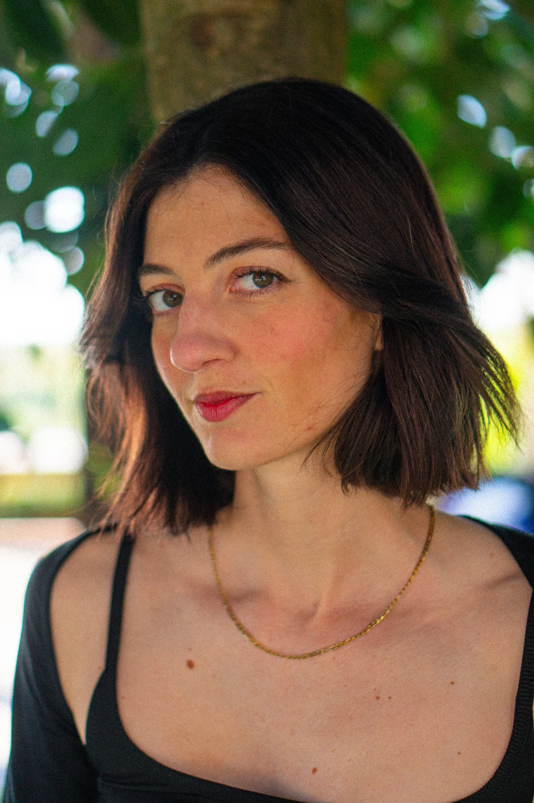

FOTÓGRAFA & CREADORA DE CONTENIDOHola,
Hola,
soy Araceli.
Me gusta observar, contar historias y encontrar algo especial en lo cotidiano.
Combino la fotografía con la creación de contenido para marcas. Desarrollo ideas, grabo y edito vídeos y creo imágenes que conectan con las personas.
Trabajo con hoteles y alojamientos para mostrar sus espacios, detalles y experiencias con una mirada estética y natural. También gestiono cuentas, diseño estrategias y acompaño a marcas a encontrar su propio estilo.
Cuéntame tu idea ↗CÓMO PUEDO AYUDARTEDe la idea
De la idea
a la imagen.
01
Fotografía
Espacios, experiencias, producto y detalles. Imágenes que cuentan una historia.
02
Vídeo & edición
Storytelling, grabación y montaje de contenido para marcas y redes sociales.
03
Contenido & estrategia
Dirección creativa, planificación de contenidos y gestión de redes sociales.
Hotel Daia · Vacaciones Desconecta · La Palapa · ECUE